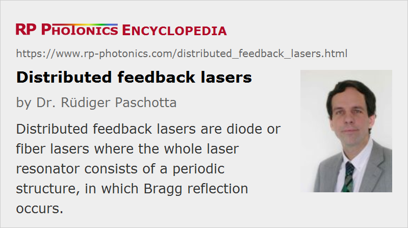

Distributed Feedback Lasers
Acronym: DFB lasers
Definition: lasers where the whole laser resonator consists of a periodic structure, in which Bragg reflection occurs
More general terms: lasers
Categories: optical resonators, optoelectronics, lasers
How to cite the article; suggest additional literature
Author: Dr. Rüdiger Paschotta
A distributed-feedback laser is a laser where the whole resonator consists of a periodic structure, which acts as a distributed reflector in the wavelength range of laser action, and contains a gain medium. Typically, the periodic structure is made with a phase shift in its middle. This structure is essentially the direct concatenation of two Bragg gratings with optical gain within the gratings. The device has multiple axial resonator modes, but there is typically one mode which is favored in terms of losses. (This property is related to the above-mentioned phase shift.) Therefore, single-frequency operation is often easily achieved, despite spatial hole burning due to the standing-wave pattern in the gain medium. Due to the large free spectral range, wavelength tuning without mode hops may be possible over a range of several nanometers. However, the tuning range may not be as large as for a distributed Bragg reflector laser.
Most distributed-feedback lasers are either fiber lasers or semiconductor lasers, operating on a single resonator mode (→ single-frequency operation). In the case of a fiber laser, the distributed reflection occurs in a fiber Bragg grating, typically with a length of a few millimeters or centimeters. Efficient pump absorption can be achieved only with a high doping concentration of the fiber, and unfortunately it is often not easy to write Bragg gratings into fibers with a composition (e.g. phosphate glass) which allows for a high doping concentration. Therefore, the output power is usually fairly limited (e.g. to a few tens of milliwatts). However, this kind of single-frequency fiber laser is very simple and compact. Its compactness and robustness also leads to a low intensity and phase noise level, i.e., also a low linewidth, although the fundamental linewidth limit (the Schawlow–Townes linewidth) is higher than for longer fiber lasers.
Semiconductor DFB lasers can be built with an integrated grating structure, e.g. a corrugated waveguide. The grating structure may be produced on top of the active region, which however requires time-consuming regrowth techniques. An alternative is to make laterally coupled structures, where the gratings are on both sides of the active region. Semiconductor DFB lasers are available for emission in different spectral regions at least in the range from 0.8 μm to 2.8 μm. Typical output powers are some tens of milliwatts. The linewidth is typically a few hundred MHz, and wavelength tuning is often possible over several nanometers. Temperature-stabilized devices, as used e.g. in DWDM systems, can exhibit a high wavelength stability.
DFB lasers should not be confused with DBR lasers = distributed Bragg reflector lasers.
Suppliers
The RP Photonics Buyer's Guide contains 34 suppliers for distributed feedback lasers. Among them:
Questions and Comments from Users
Here you can submit questions and comments. As far as they get accepted by the author, they will appear above this paragraph together with the author’s answer. The author will decide on acceptance based on certain criteria. Essentially, the issue must be of sufficiently broad interest.
Please do not enter personal data here; we would otherwise delete it soon. (See also our privacy declaration.) If you wish to receive personal feedback or consultancy from the author, please contact him e.g. via e-mail.
By submitting the information, you give your consent to the potential publication of your inputs on our website according to our rules. (If you later retract your consent, we will delete those inputs.) As your inputs are first reviewed by the author, they may be published with some delay.
Bibliography
| [1] | H. Kogelnik and C. V. Shank, “Coupled-wave theory of distributed feedback lasers”, J. Appl. Phys.43 (5), 2327 (1972), doi:10.1063/1.1661499 |
| [2] | A. Yariv, “Coupled-mode theory for guided-wave optics”, IEEE J. Quantum Electron. 9 (9), 919 (1973), doi:10.1109/JQE.1973.1077767 |
| [3] | H. W. Yen et al., “Optically pumped GaAs waveguide lasers with a fundamental 0.11 μ corrugated feedback”, Opt. Commun. 9, 35 (1973), doi:10.1016/0030-4018(73)90330-1 |
| [4] | K. H. Ylä-Jarkko and A. B. Grudinin, “Performance limitations of high-power DFB fiber lasers”, IEEE Photon. Technol. Lett. 15 (2), 191 (2003), doi:10.1109/LPT.2002.806827 |
| [5] | B. K. Das et al., “Distributed feedback-distributed Bragg reflector (DFB-DBR) coupled cavity laser with Ti:(Fe:)Er:LiNbO3 waveguide”, Opt. Lett. 29 (2), 165 (2004), doi:10.1364/OL.29.000165 |
| [6] | K. Sato, “Chirp characteristics of 40-Gb/s directly modulated distributed-feedback laser diodes”, IEEE J. Lightwave Technol. 23 (11), 3790 (2005), doi:10.1109/JLT.2005.857753 |
| [7] | A. Schülzgen et al., “Distributed feedback fiber laser pumped by multimode laser diodes”, Opt. Lett. 33 (6), 614 (2008), doi:10.1364/OL.33.000614 |
| [8] | M. Pollnau and J. D. B. Bradley, “Optically pumped rare-earth-doped Al2O3 distributed-feedback lasers on silicon”, Opt. Express 26 (18), 24164 (2018), doi:10.1364/OE.26.024164 |
See also: single-frequency operation, single-frequency lasers, distributed Bragg reflector lasers, fiber Bragg gratings, fiber lasers, semiconductor lasers
and other articles in the categories optical resonators, optoelectronics, lasers
|  |
If you like this page, please share the link with your friends and colleagues, e.g. via social media:
These sharing buttons are implemented in a privacy-friendly way!